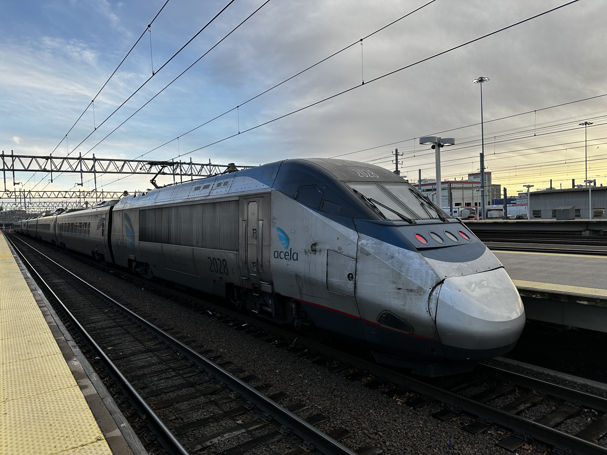
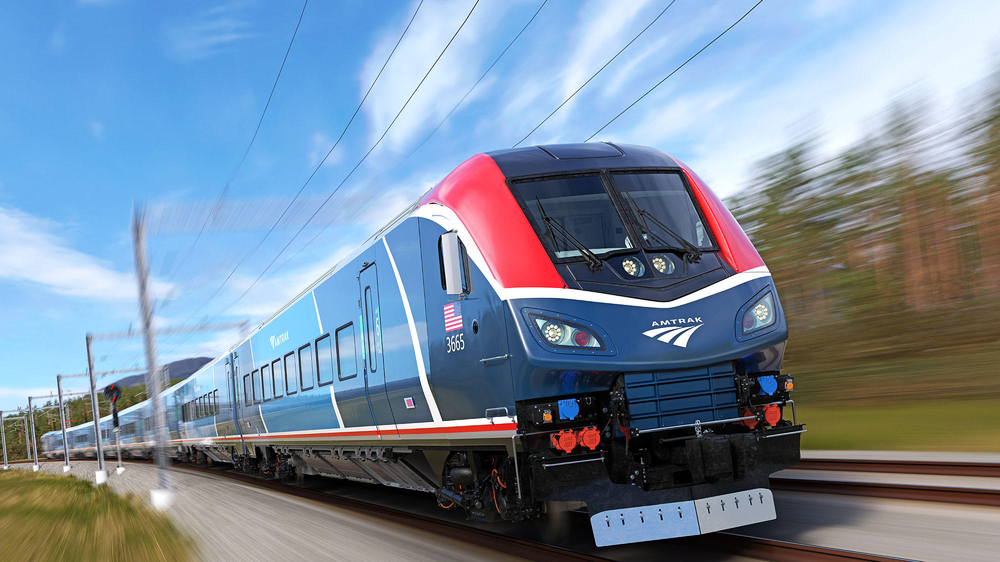
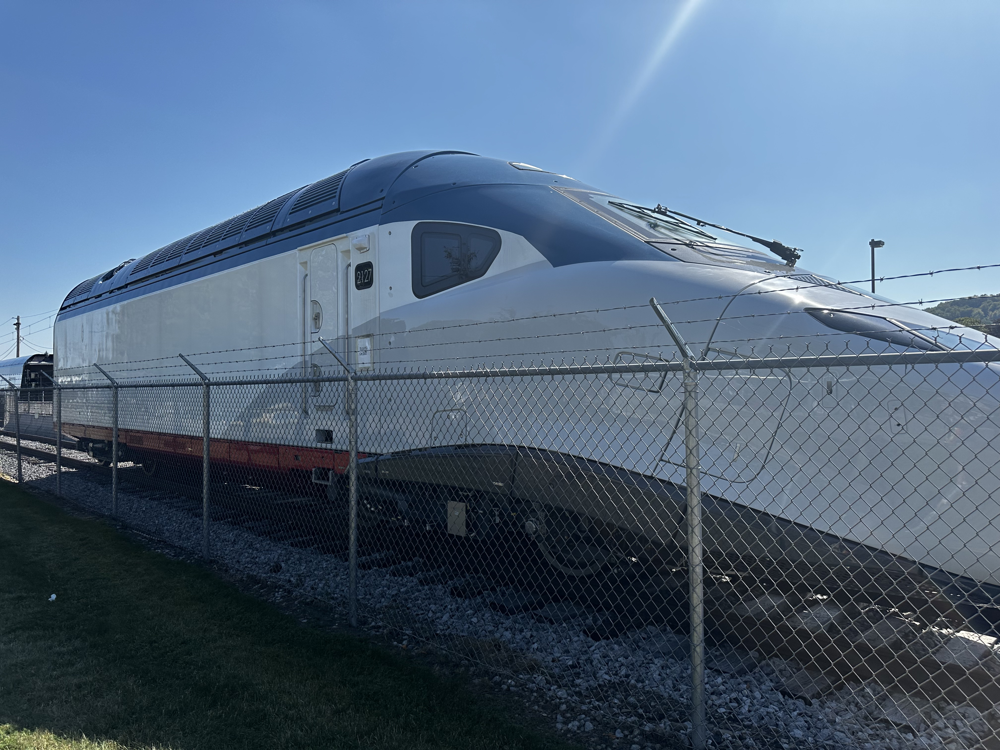
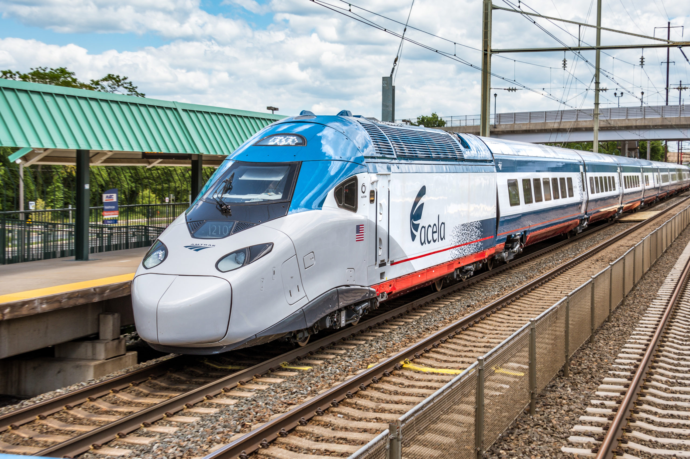

Amtrak is getting a whole new fleet of trains in the next ~5 years.
This post was made at 150mph (!!) on the New Jersey portion of the NEC. This is nice. The track is smooth and we're making some serious speed. It's a lot of text, but it's mostly good news for NE train riders.This post's about the trains. The current Acela and NEC fleet is old. The Acelas are ~24 years old on a 20-year design lifespan, and the rest of the fleet (excepting locomotives) is about 50 years old. That's ANCIENT.

Luckily, Amtrak received an absolute pile of money in Biden's infrastructure bills, and has placed orders for a complete replacement NEC fleet called the Amtrak Airo trainsets. They come in diesel, electric, and various dual-mode configurations and will expand the available fleet by ~30%. They should start being delivered in 2026. Similar locomotives are already in use on the Amtrak long-distance and Midwest fleets under the name of Siemens Chargers, and the cars are already in use on Amtrak Illinois routes.

I'm very excited for this - it will eliminate locomotive swaps for trains going to Springfield and allow better through-running to destinations south of Washington, DC. This should speed up NYC-Northampton travel times by up to 40 minutes, and the same for NYC-Virginia services.
The new fleet will also allow for a LOT more service. Like, 50% more trains per day in some places. I'm hoping that Amtrak can afford to keep buying more trainsets on a yearly basis to keep factories operating. That's the real way to get costs down - keep the manufacturers open and running on a long-term basis.

The new Acela trains were due to arrive in 2020. They're being manufactured in Hornell, NY, which is an hour south of Rochester, where I go to college. These trains were delayed by the pandemic, then manufacturing issues, and now finally are delayed due to issues running simulations on them. The track in Connecticut and Maryland is OLD. Some of it is 30-40 years old.
Alstom has not been able to create an accurate enough simulation of the new trains on these tracks to appease the Federal Railroad Administration, so the trains can't run. We are hoping that they'll be running near the end of 2024.
Also - there are 28 new Acela 2 trainsets coming, replacing 20 original Acela trainsets. Currently, at least 4 of the 20 sets are out of service. Speculatively, it's more like 6-8. There are very few Acela trips out of Boston at this point.

The new Acela fleet will allow for hourly Boston-Washington DC service in both directions, as well as half-hourly NYC-Washington service at peak hours. Additionally, they can handle the tight turns faster, as well as running at 160mph in some sections. All together, this will be a massive increase in Acela frequencies, allowing many more people to take high-speed trains every day.